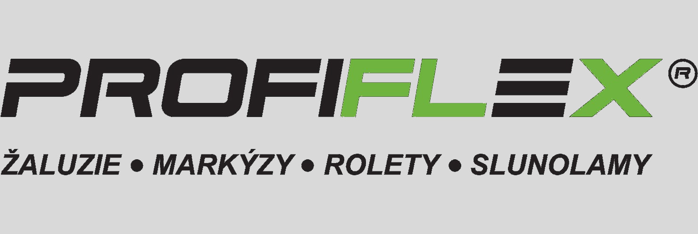

Profile
Full name
Lukáš Mikuláštík
Born
02 February 1998
Zlín, Czech Republic
Contact
 luk.mikulastik@gmail.com
luk.mikulastik@gmail.com +420 724 471 067
+420 724 471 067Skills
Leanguages
- Czech: Mother tongue
- English: B2
Software skills
- Javascript, HTML, CSS: Novice
- GIMP: Novice
- MS Office: Proficient
- AutoCAD: Expert
- ArchiCAD: Proficient
Others
- Driving license: B2 Car
Work experience
January 2020 - Current
Project manager in Kuřim, Czech Republic
Over 100 projects, Responsibility for the implementation of projects, leading people, creating technical solution, communication with customers. Responsibility of the project economy
June 2016 - December 2020
Building designer in Zlín, Czech Republic
Over 75 projects, creating technical solution, communication with customers. Work alone. Technical skill